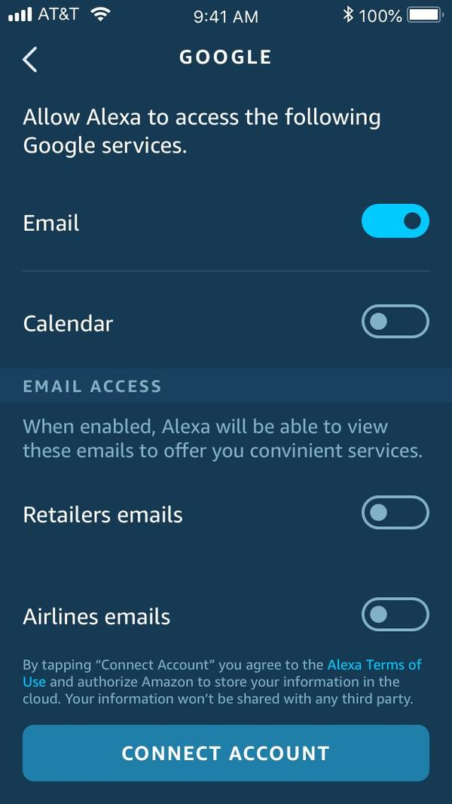
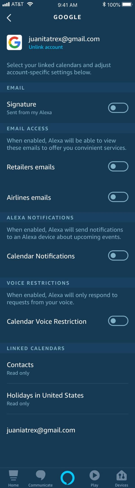

Design Artifacts — Mobile App Screens

Account Settings & Email Access Controls
These are the actual production screens from the Alexa mobile app — showing the granular email access controls, account-specific settings, and the full post-linking settings state. This is the UI layer where users manage what Alexa can see and do with their email.
Email access — account linking

OAuth consent screen with granular email access toggles — retailers, airlines. Users control exactly what Alexa can see.
Full settings — linked account

Post-linking settings: email signature, email access, Alexa notifications, voice restrictions, and linked calendars — all per-account.
Email access — service selection
Service-level toggles for email and calendar access — users choose which Google services Alexa can access before connecting.